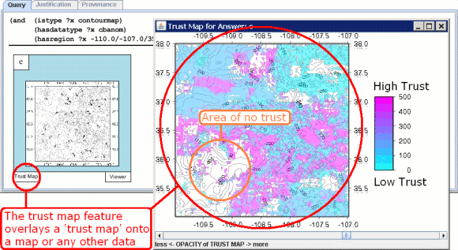

By clicking the Trust Map button as shown in the figure, a "trust map" is overlayed on a map. A trust map provides 2-D colored images representing the regions of the map that are of high or low trust. An area of the map that is colored with high trust means that that part of the map is based on data coming from a trustworthy source. Generally the more 'well known' a source is to a given community, in this case gravity data, the more trustworthy the source.
|
|  |